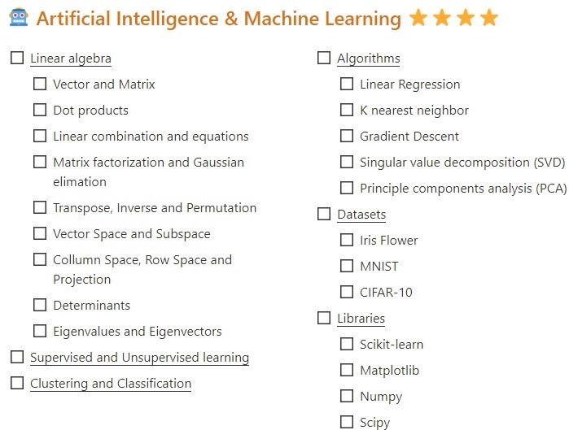
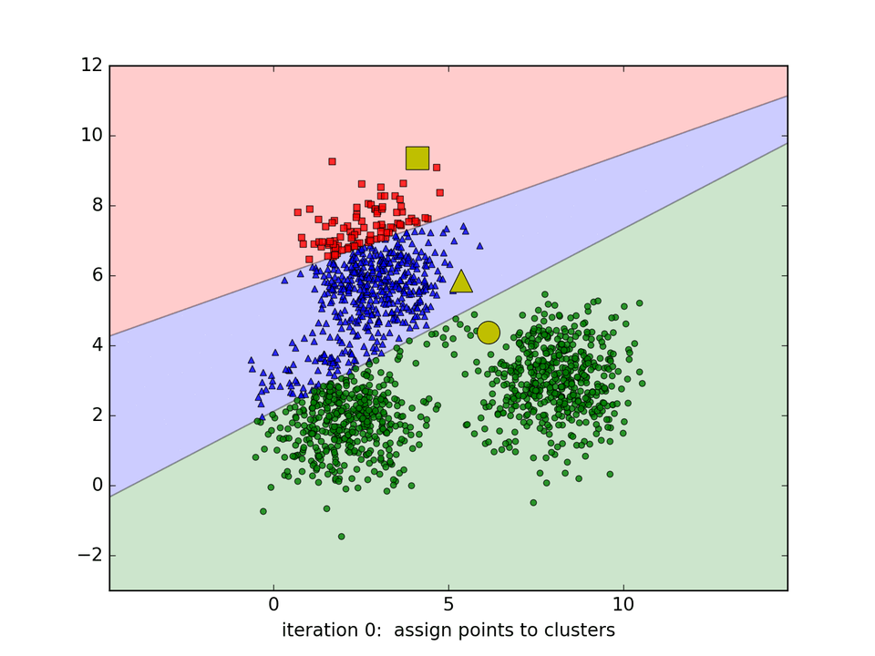
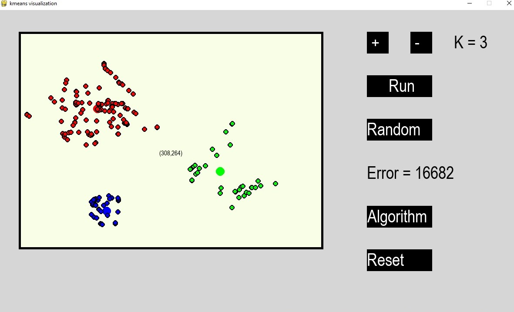
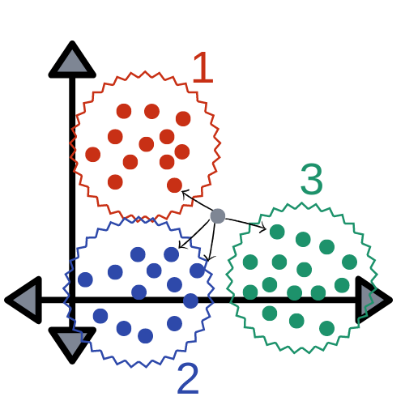
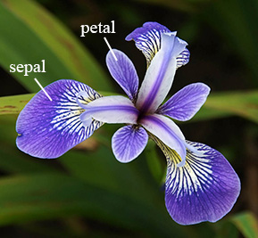
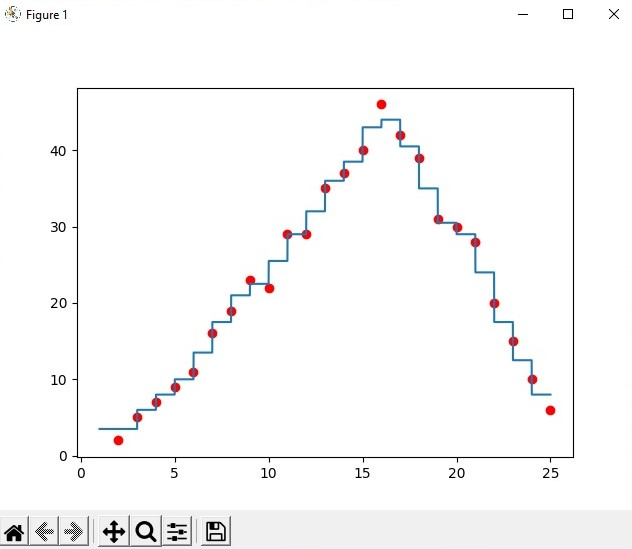

AI là gì ?
Trong khoa học máy tính, trí tuệ nhân tạo hay AI (tiếng Anh: artificial intelligence), đôi khi được gọi là trí thông minh nhân tạo, là trí thông minh được thể hiện bằng máy móc, trái ngược với trí thông minh tự nhiên của con người. Thông thường, thuật ngữ "trí tuệ nhân tạo" thường được sử dụng để mô tả các máy móc (hoặc máy tính) có khả năng bắt chước các chức năng "nhận thức" mà con người thường phải liên kết với tâm trí, như "học tập" và "giải quyết vấn đề".
Khi máy móc ngày càng tăng khả năng, các nhiệm vụ được coi là cần "trí thông minh" thường bị loại bỏ khỏi định nghĩa về AI, một hiện tượng được gọi là hiệu ứng AI.Một câu châm ngôn trong Định lý của Tesler nói rằng "AI là bất cứ điều gì chưa được thực hiện." Ví dụ, nhận dạng ký tự quang học thường bị loại trừ khỏi những thứ được coi là AI, đã trở thành một công nghệ thông thường.Khả năng máy hiện đại thường được phân loại như AI bao gồm thành công hiểu lời nói của con người, cạnh tranh ở mức cao nhất trong trò chơi chiến lược (chẳng hạn như cờ vua và Go),xe hoạt động độc lập, định tuyến thông minh trong mạng phân phối nội dung, và mô phỏng quân sự.
Trí tuệ nhân tạo có thể được phân thành ba loại hệ thống khác nhau: trí tuệ nhân tạo phân tích, lấy cảm hứng từ con người và nhân tạo.AI phân tích chỉ có các đặc điểm phù hợp với trí tuệ nhận thức; tạo ra một đại diện nhận thức về thế giới và sử dụng học tập dựa trên kinh nghiệm trong quá khứ để thông báo các quyết định trong tương lai. AI lấy cảm hứng từ con người có các yếu tố từ trí tuệ nhận thức và cảm xúc; hiểu cảm xúc của con người, ngoài các yếu tố nhận thức và xem xét chúng trong việc ra quyết định. AI nhân cách hóa cho thấy các đặc điểm của tất cả các loại năng lực (nghĩa là trí tuệ nhận thức, cảm xúc và xã hội), có khả năng tự ý thức và tự nhận thức được trong các tương tác.(nguồn Wikipedia)
Lộ trình học code AI căn bản của tôi

(nguồn: Dung Lai)
- Trước khi học về code AI căn bản thì bạn cần phải nắm rõ những khái niệm cơ bản về Đại số tuyến tính,Cách biểu diễn vector,ma trận,cộng,nhân các ma trận,...
- Sau đó học sang những phần cốt lõi trong những thuật toán cơ bản trong AI và code lại những phần cốt lõi đó (Không dùng thư viện)
- Có thể lấy data ở những Datasets phổ biến như: Iris Flower,MNIST,CIFAR-10,...
- Sau khi đã hiểu rõ bản chất của thuật toán thì ta chuyển sang học cách sử dụng thư viện và tìm ra những điểm mạnh , yếu của các thuật toán khác nhau để từ đó có thể lựa chọn sao cho phù hợp
Kmeans
Kmeans là một loại thuật toán (Unsupervised Learning)(Học không giám sát).Hay còn được gọi cách khác là loại thuật toán phân cụm
Ưu điểm:
- Là loại thuật toán có thể áp dụng được tốt kể cả ở không gian nhiều chiều (Nghĩa là có nhiều loại dữ liệu)
- Khi đã phân cụm được thành các đối tượng thành các nhóm khác nhau rồi thì việc xác định nhóm đối tượng cho data mới là chuyện dễ dàng
Nhược điểm:
- Vì là thuật toán phân cụm nên việc random ra những điểm hay nhóm đối tượng ban đầu sao cho phù hợp nhất để cho có thể phân cụm được các nhóm tối ưu nhất là việc khó khăn và cần những phương pháp random riêng chứ không phải là random ra các điểm khởi đầu ngẫu nhiên
- Thời gian huấn luyện lớn
- Cần phải lựa chọn số nhóm mà ta muốn phân cụm (có thể dùng vòng lặp để chạy)
- Định nghĩa tính cách cá nhân khách hàng dựa trên mối quan tâm của họ (thông qua lịch sử mua sắm)
- Tạo profile của khách hàng dựa trên dữ liệu theo dõi hoạt động
- Cần phải gán label cho các nhóm vì Kmeans chỉ khả năng phân cụm chứ không có khả năng gán nhãn
Ứng dụng trong thực tế:
- Nén ảnh
- Phân loại thư rác
- Phân loại dựa trên lịch sử thanh toán (chi tiêu)
- Phân loại dựa trên hoạt động trên ứng dụng di động, trên website, hay trên nền tảng ATM
- Tạo profile của khách hàng dựa trên dữ liệu theo dõi hoạt động
- Chia nhóm ảnh
- Phân loại file audio
- Chia nhóm trong theo dõi sức khỏe
- Nhân dạng ảnh (Kmeans ko phải là giải pháp tốt)
- ...
Lý thuyết về Kmeans

Chứng minh công thức Kmeans về mặt đại số:Báo cáo Kmeans (nguồn:Dung Lai)
Một số program về Kmeans cơ bản
- Program phân cụm bằng Kmeans trong không gian 2D

File code (Python): Code Python-AI
- Program Kmeans nén ảnh
Là program ứng dụng Kmeans để nén ảnh lại,nó giúp cho ảnh nhẹ hơn nhũng chất lượng ảnh giảm không đáng kể nếu K lớn
- K = 4
- K = 8
- K = 16
- Origin image
File code (Python)(1): Code Python-AI
File code (Python)(2): Code Python-AI
Linear Regression
Linear Regression(Hồi quy tuyến tính) là một loại thuật toán Superrvised Learninng(học có giám sát) loại thuật toán này lấy vào data có label ban đầu để từ đó có thể huấn luyện và xác định xu hướng của data.Từ đó có thể dự đoán những data đầu vào mới chưa có label
Ưu điểm:
- Linear Regression là thuật toán có tính chính xác cao
- Lập trình ra 1 thuật toán Linear Regression tương đối đơn giản
- Có thể dùng tốt với những data nhỏ hay data có ít chiều
Nhược điểm:
- Thuật toán Linear Regression trong công thức của nó có (^-1).Nên nếu ma trận có nhiều vector,chiều thì phép (^-1) sẽ làm tốn rất nhiều tài nguyên máy
Ứng dụng trong thực tế:
- Thuật toán Linear Regression theo tôi nó không có ứng dụng trong thực tế và nếu có thì chỉ nên được áp dụng với data nhỏ hay là phụ trợ cho thuật toán Gradient Descent
Lí thuyết về Linear Regression

Chứng minh công thức Linear Regression về mặt đại số: Báo cáo Linear Regression (nguồn:Dung Lai)
Một số program về Linear Regression cơ bản
- Program xác định xu hướng là đường thẳng của data trong không gian 2D (Linear Regression)

File code(Python): Code Python-AI
- Program xác định xu hướng là đường parabol của data trong không gian 2D (Linear Regression)

File code(Python): Code Python-AI
Gradient Descent
Có công dụng tương tự Linear Regression chỉ khác về mặt công thức và phương pháp tiếp cận.Thuật toán Gradient Descent sẽ dò để tìm ra đường thẳng hay đường tốt nhất của data đó,bằng cách liên tục lấy tọa độ của các điểm tạo nên dường thẳng nó liên tục trừ đi đạo hàm của chúng
Ưu điểm:
- Vì phương pháp tính chỉ có tính đạo hàm nhân , cộng matrix giúp cho máy tính tốn ít tài nguyên hơn
- Có thể dùng tốt với lượng data lớn , nhiều chiều
Nhược điểm:
- Vì chỉ lấy x - đạo hàm(x) (Điều này đồng nghĩa với khi x càng gần đến điểm tối ưu thì đạo hàm x ~ 0 và càng khiến nó mỗi lần giảm đi càng ngày càng ít) .Nên không thể nào có thể tìm được đường chính xác nhất
- Khi dùng Gradient Descent ta cần phải để ý điểm bắt đầu và độ trên mỗi lần di chuyển sao cho hợp lí (learning rate)
Ứng dụng trong thực tế:
- Có thể giúp xác định xu hướng của data với lượng data lớn và có nhiều chiều (là một thuật toán hay được sử dụng trong thực tế thay cho Linear Regression)
Lí thuyết về Gradient Descent

Chứng minh công thức Gradient Descent về mặt đại số: Báo cáo Gradient Descent (nguồn: Dung Lai)
Một số Program về Gradient Descent cơ bản
- Program xác định xu hướng là đường thẳng của data trong không gian 2D (Gradient Descent)

File code(Python): Code Python-AI
- Program xác định xu hướng là đường parabol của data trong không gian 2D (Gradient Descent)

File code(Python): Code Python-AI
KNN (K Nearest Neighbors)
KNN là kiểu thuật toán thuộc loại Supervised learning(học có giám sát) loại này cần phải có label và cùng dạng.Nó có công dụng chỉ yếu là dự đoán xem data mới sẽ thuộc kiểu label nào(KNN cũng tương tự Kmeans đều là thuật toán phân cụm,những khác nhau về cách tiếp cận)
Ưu điểm:
- Không mất thời gian huấn luyện
Nhược điểm:
- Nếu data cho vào lớn và nhiều chiều thì tài nguyên để KNN nhận định một data mới thuộc nhóm nào là rất lớn.Vì nó phải tính khoảng cách từ điểm data mới đó đến tất cả những data đc training
Ứng dụng trong thực tế:
- Vì nhược điểm ở trên nên KNN không có ứng dụng trong thực tế (Nhưng có ứng dụng trong học tập)
Lí thuyết về KNN

Chứng minh công thức Gradient Descent về mặt đại số: Báo cáo Gradient Descent (nguồn: Dung Lai)
Một số Program về KNN cơ bản
- Program phân loại cách loại hoa thuộc nhóm (Iris flower)

File code(Python): Code Python-AI-not use library
File code(Python): Code Python-AI-use library
- Program phân loại cách loại chữ số viết tay thuộc nhóm (Digits)

File code(Python): Code Python-AI-use library
- Program dùng KNN làm bài Regression

File code(Python): Code Python-AI-use library